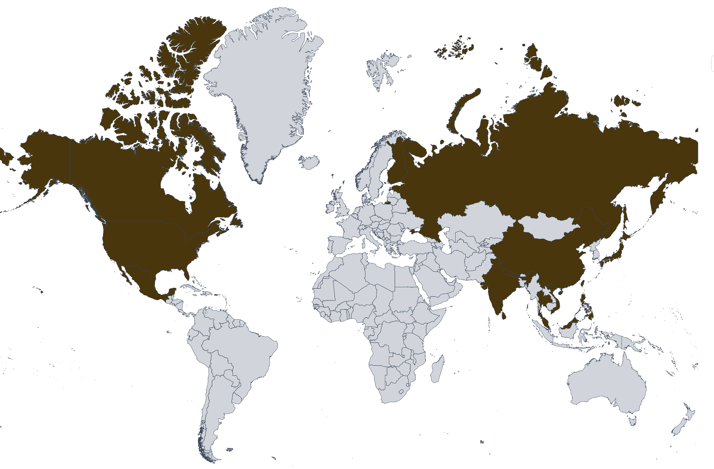

Lendorav
Pisike lendaja. Suur seikleja

Lendorav
Lendorav on oravlaste sugukonda kuuluv näriline, kes on oravast pisut väiksem. Tema nimi võib olla mõnevõrra eksitav, sest lennata lendorav ei oska ja tiibu tal pole. Küll aga on tal ees- ja tagajäsemete vahel lennunahk ehk lennus, mille abil suudab ta puude vahel liuelda, kusjuures need liuglennud võivad olla üsna pikad (enamasti 10-30 m, aga vahel kuni 100 m). Oma kergelt lapikut saba suudab lendorav kasutada tüürina, et keset liuglendu oma suunda muuta. Lendoraval on suured silmad ja hall karvkate, mis kõhupoolel on valkjashall. Suvel on seljal olev karv veidi pruunika varjundiga, talvel aga hõbehall.
Kus võib kohata lendoravat?
Lendoravaid võib kohata Põhja-Ameerikas, Euroopas ja Aasias. Lendoravaid leidub kõige rohkem Hiinas, Ameerika Ühendriikides ja Soomes. Need riigid pakuvad lendoravatele sobivaid elupaiku ning on koduks mitmetele erinevatele lendoravaliikidele
Lendoravad eelistavad metsaalasid, kus kasvavad vanad ja kõrged puud ning leidub piisavalt õõnsusi pesitsemiseks.
Sõltuvalt liigist elavad nad nii okas- ja segametsades kui ka troopilistes vihmametsades. Tihe puuvõrastik pakub neile kaitset ning võimaldab puult puule liuelda.

Huvitavad faktid
Kas lendorav päriselt lendab?
Levinud Euraasia segametsavööndis Soomest ja Eestist kuni Vaikse ookeanini. Oma levila põhiosas on liik soodsas seisundis, Eestis aga on isendide arv väga väike ja populatsioon kriitilises seisundis. Kunagi oli levinud üle Eesti, praegu esineb vaid Virumaal, seal võib olla mõnikümmend kuni mõnisada isendit.